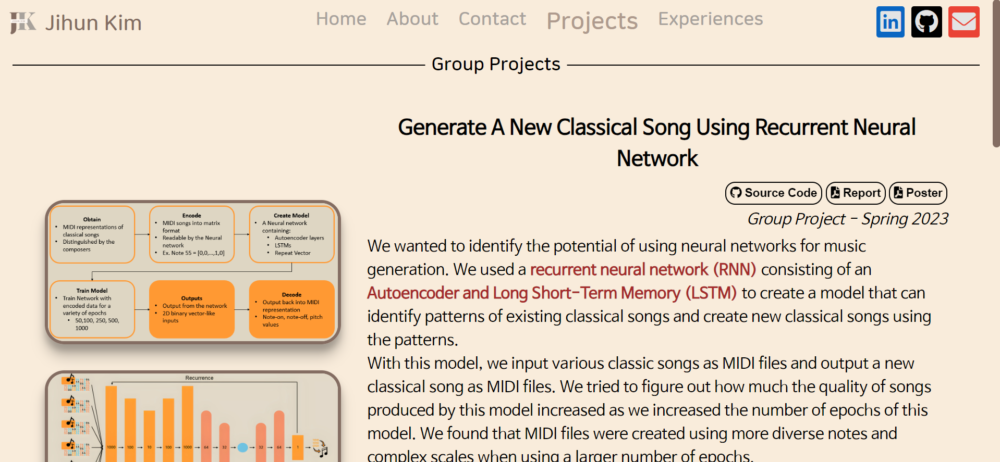
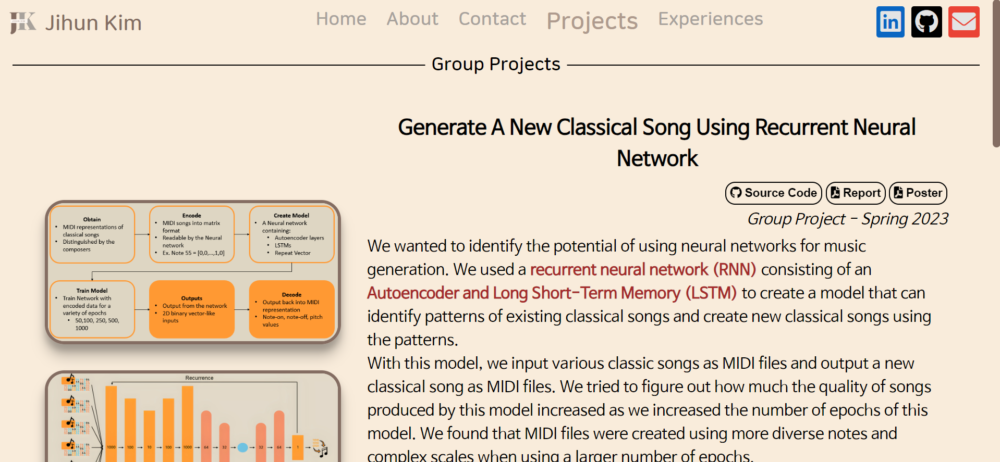

Attendance:
- Aug 2020 - May 2024
Cumulative GPA:
- 3.98/4.00
Dean's List:
- Fall 2020 - Spring 2023


Nov 2023 - Dec 2023
Wordle is a game where players have to guess the target word based on color hints such as gray, yellow, or green about the letter locations.Aug 2023 - Dec 2023
Our group project focused on identifying vulnerabilities in code snippets generated by Large Language Models (LLMs), with a specific focus on ChatGPT. Our research question probes into the security and reliability of code snippets produced by ChatGPT.


Apr 2023 - May 2023
While identifying the neural networks for music generation, our group utilized a Recurrent Neural Network (RNN) with an Autoencoder and Long Short-Term Memory (LSTM). We used TensorFlow to implement RNN.The goal was to recognize patterns in existing classical songs and generate new compositions based on those patterns.Aug 2022 - Dec 2022
Our group enhanced the design of the University Dining website to help students get information easily. We utilized Typescript and Sass to improve the overall design and incorporated information such as restaurant locations and menus.


Dec 2023
The Public-Facing Project, focused on GenAI and writing, addresses the diverse perspectives among students using generative AI like ChatGPT or Bing Chat. The project involves a surveying UTK students to explore their perceptions of ChatGPT, delving into usage patterns, reasons for usage or non-usage, and the ability to distinguish between texts generated by ChatGPT and those written by humans. Additionally, a website was implemented to share survey results and analysis.Aug 2023
I decided to convey my programming experience by creating a virtual portfolio website. Despite being my first attempt at HTML, JavaScript, and CSS, my familiarity with TypeScript and Sass from the "Implementing the University Dining Website" project proved beneficial. 



Jul 2022, Aug 2023
In N-queens, the challenge is to place n-queens on an n*n chessboard without them threatening each other. Knight's Tour involves the knight passing through all squares of a certain-sized chessboard. I created C++ programs to solve these puzzles using recursion.Aug 2022 - Nov 2022
I coded AES and SHA-1 in C++, and Diffie-Hellman, RSA, and SRP in Python as part of my cryptography learning. All codes were hard-coded.

Sep 2022 - Oct 2022
I proficiently use Excel for data organization, specifically in managing schedules and expenses. Notable examples include Planner.xlsx and Statement of Expenditure.xlsx.Oak Ridge National Laboratory
May 2023 - Jul 2023
I engaged in research under the guidance of my mentor, Junchuan Fan, aiming to enhance semantic interoperability among diverse geographic categorization schemes. Leveraging large language models, I explored natural language processing tools, particularly focusing on information retrieval and semantic search.University of Tennessee, Knoxville
Aug 2022 - May 2023
As an undergraduate teaching assistant at the University of Tennessee, Knoxville, I supported Physics and Modeling for Engineers I & II courses. My responsibilities included setting up equipment for problem-solving involving physics principles.
Clarksville High School
Aug 2018 - Mar 2020 (Mu Alpha Theta, Junior Civitan)
Aug 2019 - Mar 2020 (SNHS)
During my time at Clarksville High School, I actively participated in three clubs: Mu Alpha Theta, Junior Civitan, and the Science National Honor Society (SNHS).Clarksville High School
Sep 2019 - Feb 2020
Tutored high school students in Algebra I & II, Geometry, and Pre-Calculus at Clarksville High School. Focused on building conceptual understanding, I aimed to instill an interest in mathematics among the students.
Clarksville-Montgomery County Public Library
Jun 2019 - Jul 2019
I ensured the seamless execution of programs like magic shows, readings, and science experiences by managing props and offering guidance to children and parents. The opportunity to serve the community and assist people was not only rewarding but also immensely enjoyable.Microsoft Excel Collegiate Challenge
Sep 2023 - Nov 2023
The MECC Certificate of Completion certifies Excel skills and showcases hands-on expertise through a diverse set of practical challenges. These challenges are crafted to simulate real-world scenarios, with some fun esports-style challenges added. Completing these tasks demonstrates both theoretical knowledge and practical Excel skills.
University of Tennessee, Knoxville
Aug 2020 - May 2023
Each term, undergraduate students who have completed at least 12 credit hours and have an overall term grade point average (GPA) of 3.5-4.0 earn their place on the Dean's List:Oak Ridge National Laboratory
Jun 2023 - Aug 2023
I completed the Oak Ridge Leadership Computing Facility (OLCF) course, where I gained proficiency in key tools for High-Performance Computing (HPC) and Machine Learning (ML). The course covered topics such as Message Passing Interface (MPI), Open Multi-Processing (OpenMP), and GPU programming.


University of Tennessee, Knoxville
Aug 2021 - Dec 2023
The University of Tennessee, Knoxville evaluates the eligibility of a student for a college scholarship based on many factors, including academic qualification (high school GPA and ACT scores), extracurricular activities at high school, leadership roles, awards received at high school, and other factors as may be specified by a scholarship award donor, all on a competitive and holistic basis.Clarksville High School
Apr 2020
Awarded to a student who have demonstrated the highest academic achievement and active participation in Honors Chemistry at Clarksville High School.

Clarksville High School
Apr 2020
The 4.0 GPA Award is given to students with a perfect 4.0/4.0 GPA. The Principal's Leadership Award recognizes individuals who serve as role models for students in activities inside and outside the school.